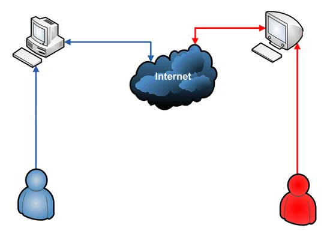
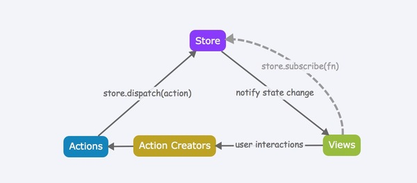

2. 概述
SC系统是专注于运动社交的web应用，开发的目标是为用户提供个人运动数据的管理，帮助用户更好地、更科学地运动，同时为用户提供丰富多彩的活动，使用户通过运动扩展交际圈成为可能。通过使用SC系统，用户可以
- 方便地管理自己的运动数据
- 科学、健康地运动
- 发起或参加相关活动
- 扩大交际圈
2.1 开发环境
- 前端：前端基于
React + Redux框架开发，使用webpack打包应用，未实现单元测试。 - 后端：后端采用
php7.0开发，使用nginx作为反向代理服务器，php-fpm处理请求。 - 开发环境：Ubuntu Kylin 16.04
- IDE：WebStorm、PhpStorm
- 测试浏览器：Chrome、android 自带浏览器
2.2 软件架构
采用Restful架构实现应用

2.3 系统设计模式
基于Redux的数据流

备注：初次使用
React + Redux框架，对于框架的理解不够深入，此处留待补充完善。